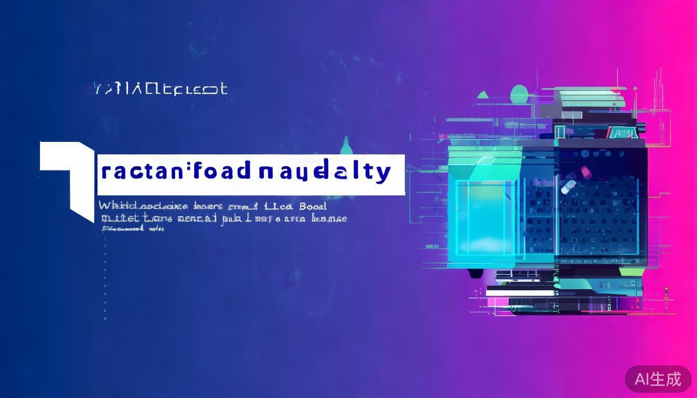

NewsDigest 新闻摘要官
16 号毕业设计：NewsDigest 新闻摘要官
在信息过载的移动互联网时代，普通用户每天接触上百条热点新闻却难辨真假、抓不住核心。本项目带你从零搭建具备热点聚合、事实核验、智能摘要能力的资讯Agent，完成后可掌握大模型工具调用、多源数据处理、RAG事实校验等工程落地能力。
项目简介
NewsDigest 新闻摘要官是面向C端用户的轻量化资讯智能体，核心定位是“帮用户10分钟读完当日全网核心热点，不被谣言带节奏”。项目以当日全网热点事件为处理单元，自动完成多源新闻抓取、去重聚类、事实交叉核验、要点结构化摘要生成全流程，最终输出无冗余、可溯源、可信度标注的精简资讯包，既可以作为个人资讯效率工具，也可二次开发为公众号、社群的每日热点自动推送机器人。项目完全基于开源组件与公开API搭建，最低仅需1核2G云服务器即可部署运行，无需高额算力成本。
功能特性

- 全网热点自动聚合：支持微博热搜、百度热榜、知乎热榜、36氪、澎湃新闻等8个主流资讯源的定时抓取，自动按事件维度做语义去重与聚类，避免重复信息干扰。
- 多维度事实核验：对接权威事实核查库（中国互联网联合辟谣平台、腾讯较真）与搜索引擎快照，对热点事件中的争议表述做交叉验证，自动标注“已证实/待核实/谣言”可信度标签与溯源链接。
- 结构化要点摘要：基于大模型生成300字以内的事件核心摘要，拆解为“事件起因/最新进展/各方回应/后续影响”4个固定模块，支持用户自定义摘要长度与关注维度。
- 个性化订阅推送：支持用户设置关注领域（科技/财经/社会/国际等）、推送时间、推送渠道（微信/邮件/飞书机器人），自动过滤无关热点。
- 资讯溯源卡片：每条摘要附带3-5个不同信源的原始报道链接，标注信源可信度等级（官方媒体/市场化媒体/自媒体/社交平台），方便用户深度查阅。
- 谣言预警提醒：对标记为“谣言”“不实信息”的热点，自动生成100字以内的辟谣要点，优先推送给订阅相关关键词的用户。
技术架构
| 组件 | 技术选型 | 作用 |
|---|---|---|
| 热点采集层 | Requests + BeautifulSoup4 + APScheduler | 定时爬取各平台热榜与新闻详情页，做基础的正文提取、脏数据清洗 |
| 事件处理层 | scikit-learn TF-IDF + DBSCAN聚类 + jieba分词 | 对抓取的新闻做语义相似度计算，按事件维度聚类去重，提取事件核心关键词 |
| 事实核验层 | SerpAPI + 通义千问向量引擎 + FAISS向量库 | 检索权威信源的相关报道与辟谣信息，做向量相似度匹配，完成事实交叉校验 |
| 摘要生成层 | Qwen-7B-Chat（本地部署）/ GPT-3.5-turbo（API调用） | 基于聚类后的多源新闻内容，生成结构化要点摘要，输出可信度标注 |
| 推送交互层 | FastAPI + 微信公众号测试号API + SMTP | 提供Web配置页面，支持多渠道推送，接收用户的自定义查询请求 |
| 数据存储层 | SQLite + Redis | SQLite存储历史热点、用户订阅配置，Redis做热点缓存、任务队列调度 |
架构说明：整体采用流水线+插件化设计，采集层、核验层、生成层、推送层完全解耦，新增资讯源、新增推送渠道仅需开发对应插件即可接入。任务调度采用定时触发+手动触发双模式：默认每2小时执行一次全量热点采集聚类，用户也可手动输入关键词查询特定事件的摘要与核验结果。事实核验模块采用“检索增强+规则校验”双逻辑：一方面匹配本地辟谣库的历史谣言，另一方面通过搜索引擎检索权威信源的交叉表述，避免大模型生成幻觉内容。
核心代码骨架
import jieba
import faiss
import requests
from sklearn.cluster import DBSCAN
from sklearn.feature_extraction.text import TfidfVectorizer
from datetime import datetime
# --------------------------
# 模块1：热点聚类去重模块
# 职责：将多源抓取的零散新闻按事件维度聚类，避免重复
# --------------------------
def cluster_news(news_list: list[dict]) -> list[list[dict]]:
# 提取所有新闻的标题+摘要做分词
corpus = [" ".join(jieba.lcut(f"{n['title']} {n['content'][:200]}")) for n in news_list]
# TF-IDF向量化
vectorizer = TfidfVectorizer(max_features=1000)
tfidf_matrix = vectorizer.fit_transform(corpus)
# DBSCAN密度聚类，eps参数根据实际效果调优，0.4为经验值
db = DBSCAN(eps=0.4, min_samples=2, metric="cosine").fit(tfidf_matrix)
# 按聚类标签分组，标签-1为孤立新闻单独成组
clusters = {}
for idx, label in enumerate(db.labels_):
clusters.setdefault(label, []).append(news_list[idx])
return list(clusters.values())
# --------------------------
# 模块2：事实核验+摘要生成模块
# 职责：基于聚类后的新闻簇，做事实校验并生成结构化摘要
# --------------------------
def generate_digest(news_cluster: list[dict], llm_client, fact_index: faiss.IndexFlatIP) -> dict:
# 1. 提取事件核心关键词，检索本地辟谣向量库
core_content = "\n".join([f"来源{n['source']}：{n['content'][:500]}" for n in news_cluster])
core_keywords = " ".join([k for k, v in jieba.analyse.extract_tags(core_content, topK=10, withWeight=True)])
# 向量检索相似辟谣信息
query_vec = llm_client.get_embedding(core_keywords).reshape(1, -1)
search_res = fact_index.search(query_vec, k=3)
rumor_hint = [r for r in search_res[0] if r[1] > 0.8] # 相似度大于0.8判定为匹配到已知谣言
# 2. 构造Prompt调用大模型生成结构化摘要
prompt = f"""
你是专业新闻编辑，请基于以下多源新闻内容生成300字以内的结构化摘要，包含【事件起因】【最新进展】【各方回应】三个模块：
新闻内容：{core_content}
已知辟谣提示：{rumor_hint if rumor_hint else '无匹配已知谣言'}
最后标注可信度等级：高/中/低，给出判断依据。
"""
digest_content = llm_client.chat(prompt)
# 3. 组装溯源链接
source_links = [{"source": n["source"], "url": n["url"], "level": n["source_level"]} for n in news_cluster[:5]]
return {
"event_id": hash(core_keywords),
"title": news_cluster[0]["title"],
"digest": digest_content,
"source_links": source_links,
"rumor_tag": len(rumor_hint) > 0,
"publish_time": datetime.now().strftime("%Y-%m-%d %H:%M")
}运行步骤
- 环境准备：本地安装Python 3.10+，执行
pip install requests beautifulsoup4 apscheduler scikit-learn jieba faiss-cpu fastapi uvicorn redis sqlalchemy dashscope安装所有依赖，本地启动Redis服务（默认端口6379）。 - 配置API密钥：在项目根目录创建
.env文件，填写大模型API密钥（若使用本地Qwen-7B可跳过）、SerpAPI密钥、微信公众号/邮件推送的鉴权信息，示例配置可参考项目仓库的.env.example。 - 初始化事实核验库：执行
python scripts/init_fact_db.py，自动抓取中国互联网联合辟谣平台近30天的辟谣数据，生成FAISS向量索引文件存储到data/目录。 - 启动后端服务：在项目根目录执行
uvicorn main:app --host 0.0.0.0 --port 8000，启动FastAPI服务，访问http://localhost:8000/docs可查看接口文档，手动触发热点采集任务。 - 配置定时任务：默认配置为每2小时执行一次全量热点采集聚类，每日早8点、晚6点向订阅用户推送汇总资讯包，可在
config/scheduler.py中修改调度周期。 - 验证功能：访问
http://localhost:8000打开Web配置页，设置关注领域为“科技”，手动触发一次热点采集，等待1-2分钟即可查看生成的结构化新闻摘要与可信度标注。 - 配置推送渠道：若需要自动推送，在Web页填写微信测试号的openid或邮箱地址，即可在设定时间收到推送的资讯包。
扩展思路
- 多模态资讯支持：新增短视频平台（抖音、B站）热榜的字幕提取能力，对接Whisper模型做语音转文字，覆盖短视频渠道的热点事件，解决短视频信息难检索、难摘要的问题。
- 观点倾向分析：在摘要模块新增舆论倾向分析功能，基于情感分类模型统计不同信源的报道立场，标注“正面/中性/负面”倾向，帮助用户全面了解事件舆论场。
- 本地知识库联动：支持用户上传自己关注的领域资料（如行业报告、公司公告），将私有知识库与公开热点结合，生成更贴合用户需求的行业专属资讯摘要。
- 对话式查询能力：基于现有摘要数据接入对话交互模块，支持用户用自然语言提问“今天有什么科技行业大事件？”“某某事件最新进展是什么？”，Agent自动检索相关热点做针对性回答。
小结与练习
核心收获
- 掌握资讯类Agent的全链路开发流程，理解从多源数据采集、清洗、聚类到内容生成、推送的流水线设计逻辑，能够独立搭建垂直领域的信息聚合类工具。
- 掌握基于RAG的事实核验实现方法，学会用向量检索+交叉验证的方式降低大模型幻觉，解决生成内容可信度不足的问题。
- 掌握插件化架构的设计思路，能够快速对接新的数据源、大模型、推送渠道，提升项目的可扩展性。
动手练习
- 基础练习：在现有采集模块中新增“虎嗅网”热榜的采集插件，完成正文提取、信源等级标注，接入现有聚类流程，验证新数据源是否能正常参与事件聚类与摘要生成。
- 进阶练习：修改摘要生成的Prompt，新增“事件影响”模块，同时实现关键词过滤功能：当事件包含用户设置的屏蔽关键词时，自动过滤不进入推送列表。
本项目为本站 AI 学院「毕业设计」板块原创教学项目，由 AI 生成原型并整理，以官方文档与真实开源生态为准。 技术栈均基于公开、主流的开源库（如 Transformers / LangChain / FastAPI / SQLite 等），可对照各库官方仓库核验。 如引用第三方开源项目，请遵循其原始许可证（MIT / Apache-2.0 / BSD 等）；本项目内容可按 MIT 协议自由使用，标注出处即可。